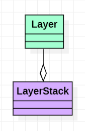

Usage
Different contents are assigned to different layers and then output them to the screen in a specific rendering order.
Structure

Advantages
- Achieve hierarchical management.
Layer
Layer : As a base class, it contains the basic functionality required by the layer (events listening and contents updating).
class HAZEL_API Layer
{
public:
Layer(const std::string& name = "Layer");
virtual ~Layer();
virtual void OnAttach() {}
virtual void OnDetach() {}
virtual void OnUpdate() {}
virtual void OnEvent(Event& event) {}
inline const std::string& GetName() const { return m_DebugName; }
protected:
std::string m_DebugName;
};
LayerStack
LayerStack : Storage and manage all layers.
class HAZEL_API LayerStack
{
public:
LayerStack();
~LayerStack();
void PushLayer(Layer* layer);
void PushOverlay(Layer* overlay);
void PopLayer(Layer* layer);
void PopOverlay(Layer* overlay);
std::vector<Layer*>::iterator begin() { return m_Layers.begin(); }
std::vector<Layer*>::iterator end() { return m_Layers.end(); }
private:
std::vector<Layer*> m_Layers;
std::vector<Layer*>::iterator m_LayerInsert;
};
The topmost layer receives events first and is rendered at the last (it will overwrite the other layers).